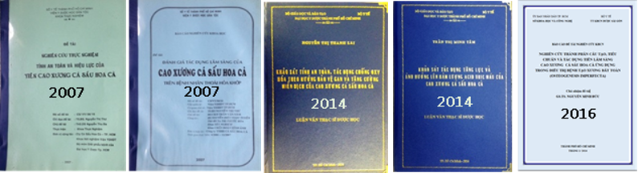
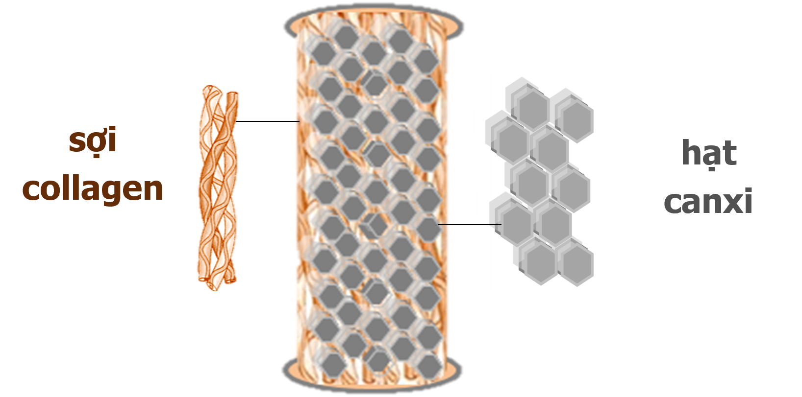
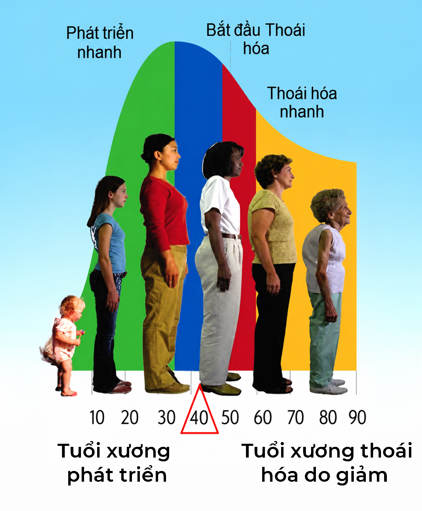
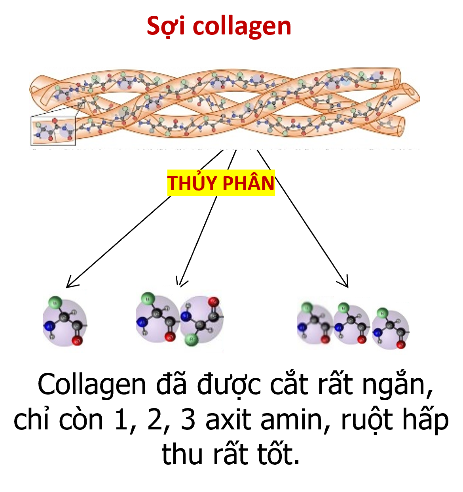

Nếu bạn hay người thân đang khổ
sở
Vì những tình trạng này:
Những cơn nhức mỏi kéo dài:
Khớp đau, không còn linh hoạt, kêu lụp cụp.
Loãng xương ngày càng tăng:
Càng lớn tuổi việc vận động khó khăn.
Bạn không cô đơn đâu, hàng triệu người trên thế giới cũng giống như bạn vậy, dù đã uống nhiều loại thuốc hay canxi, vitamin D…
Theo tổ chức Y Tế Thế Giới, hiện có khoảng hơn 1,7 tỷ người bị bệnh thoái hóa khớp, loãng xương với 9 triệu ca gãy xương hàng năm. Tại Việt Nam, năm 2023 có 3,6 triệu người bị loãng xương, dự báo sẽ tăng lên 4 triệu vào năm 2030.
Tại sao tình trạng bệnh thoái hóa xương, khớp ngày càng gia tăng như vậy?
Bạn hãy đọc kỹ tài liệu này để biết sự thật vì sao có tình trạng ảm đạm trên, bạn sẽ tìm thấy niềm tin và chủ động xây dựng sức khỏe bền vững cho chính mình.
Hành trình nghiên cứu
Collagen Diamond Bone
Collagen Diamond Bone là thành quả nghiên cứu hơn 10 năm của các nhà y học hàng đầu Việt Nam tại Viện Y Dược Học Dân Tộc và Đại học Y Dược Tp.HCM.
Các đề tài nghiên cứu đã được thực hiện với sự chủ trì của Sở Y Tế và Sở Khoa Học Công Nghệ thành phố Hồ Chí Minh từ năm 2006 đến năm 2016 cho kết quả:
Collagen Diamond Bone (cao cá sấu Hoa Cà) hỗ trợ:

Các đề tài cáo cáo kết quả nghiên cứu
Ý Kiến Các Nhà Khoa Học
Giáo sư tiến sĩ Nguyễn Minh Đức
Trưởng ban Nghiên cứu khoa học ĐH Y Dược TP.HCM.
Chủ trì đề tài nghiên cứu.
"Kết quả nghiên cứu cho thấy cao xương Cá Sấu Hoa Cà (Collagen Diamond Bone) là một nguồn dinh dưỡng rất tốt, là collagen đã thủy phân do đó sự hấp thu rất dễ dàng."
Video (GS Đức)Bác sĩ.CKII. Trần Văn Năm
Phó Viện trưởng Viện Y Dược Học Dân Tộc Tp.HCM.
Chủ trì đề tài nghiên cứu.
"Cao xương có tác dụng kháng viêm, giảm đau và còn chống loãng xương hiệu quả. Chỉ sau 6 tháng dùng cao, mật độ xương bệnh nhân tăng rõ rệt."
Video (BS Năm)KẾT QUẢ NGHIÊN CỨU KHOA HỌC
XƯƠNG KHỚP PHẢI CẦN CÓ COLLAGEN
Các nghiên cứu khoa học đã chỉ rõ sự thật về cấu trúc xương là:
Xương được tạo thành từ hai dưỡng chất chính

Canxi rất quan trọng để tạo độ cứng cho xương.
Collagen là một loại protein, đó là “chất keo sinh học” cung cấp sự đàn hồi và ổn định cho cơ thể. (chữ colla có nghĩa là keo).
Trong xương, canxi như viên gạch, còn collagen giống như xi măng kết dính các hạt canxi để tạo thành khối xương. Trong sụn, collagen đóng vai trò là chất đệm, giúp các khớp chuyển động linh hoạt ở các đầu xương.
Khi cơ thể không sản xuất đủ collagen thì canxi không bám dính vào xương khớp được, lúc đó:


TUỔI CÀNG CAO, CƠ THỂ
TẠO “COLLAGEN” CÀNG ÍT DẦN.
“AI CHỮA LÀNH NGƯỜI ĐÓ CÓ LÝ !”
Lời dạy trên của Hippocrates, ông tổ của nền y học phương Tây,
nhắc rằng:
“Y học đúng
đắn là phải
giúp
cơ thể tự chữa lành.”
Lời nói từ người bệnh là minh chứng mạnh mẽ nhất cho lời dạy trên !
Collagen Diamond Bone được cơ thể hấp thu rất tốt là nhờ
“Công Nghệ Thủy Phân Đặc Biệt”
Bạn có thể thắc mắc: Collagen Diamond Bone có gì đặc biệt so với với các loại collagen khác mà lại có thể hỗ trợ được gân, cơ, xương, khớp tốt đến như vậy?
Câu trả lời rất đơn giản và khoa học là:

Nhờ đã được cắt thành các đoạn axit amin siêu ngắn nên Collagen Diamond Bone được xem một loại thực phẩm dinh dưỡng rất tốt, dễ hấp thu. Chính yếu tố đặc biệt này đã giúp cho cả trẻ sơ sinh và người cao tuổi đều sử dụng tốt khi cần bổ sung collagen.
Collagen Diamond Bone hỗ trợ tạo mới cơ, xương, khớp theo cách tự nhiên của cơ thể, giúp giảm đau dần. Không chứa các loại thuốc giảm đau, cho nên bạn sẽ cảm nhận được tác dụng của thuốc sau 4 - 8 tuần cho đến khi khỏe hẳn.
Ngày xưa hiếm tuổi bảy mươi,
Ngày nay tuổi ấy trông người tưởng Hoa !
"Hãy cùng nhau lan tỏa giải pháp chăm sóc sức khỏe cơ xương khớp khoa học này đến với mọi người chung quanh. Đây là một hành động ý nghĩa cho chính bạn và cho cộng đồng!"
Collagen Diamond Bone không chỉ là câu chuyện khoa học, mà là câu chuyện của tình người, của sự thật và của những mảnh đời trẻ em xương thủy tinh được hồi sinh kỳ diệu.
Hãy để Collagen Diamond Bone đồng hành cùng bạn và những người thân yêu trên hành trình vui sống dẻo dai, khỏe mạnh mỗi ngày!
Từ nay loãng xương, thoái hóa khớp không còn là nỗi bế tắc như ngày xưa nhiều người vẫn cam chịu “Già thì phải chịu bệnh thôi”, nếu bạn biết bảo vệ hệ xương khớp bằng khoa học đúng cách.
“Giữ Cơ Thể Trẻ Khỏe Theo Trí Tuệ Y Học Đông Phương”
Bài thơ của Hải Thượng Lãn Ông, ông tổ của nền y học cổ truyền Việt Nam, răn dạy chúng ta về tầm quan trọng của việc Phòng bệnh hơn chữa bệnh.
Ngày xưa các bậc thánh tri,
Chữa khi chưa bệnh có gì khó khăn.
Đau rồi
tiếc của thương thân!
Khác gì thấy loạn mới cần đúc gươm
Đừng chờ đến lúc bệnh nặng mới chạy chữa, sẽ khổ và tốn kém hơn nhiều. Collagen Diamond Bone bổ sung axit amin thiết yếu giúp nuôi dưỡng cơ thể, làm chậm lão hóa.
Hãy đầu tư cho sức khỏe, sự dẻo dai và tuổi trẻ dài lâu ngay hôm nay!
Sản phẩm này không phải là thuốc, không có tác dụng thay thế thuốc chữa bệnh.